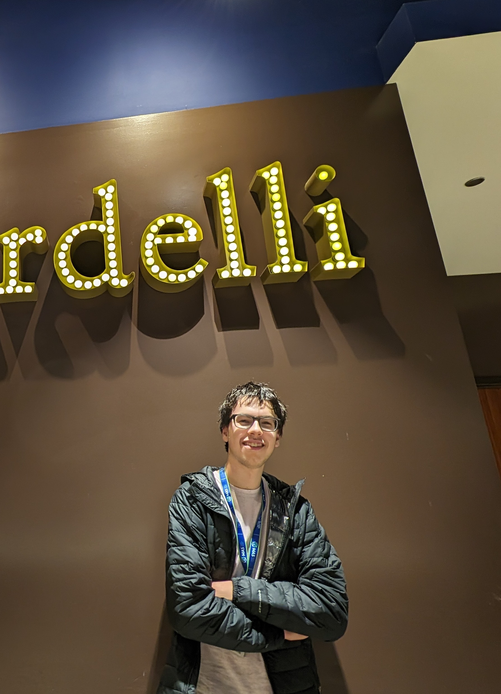
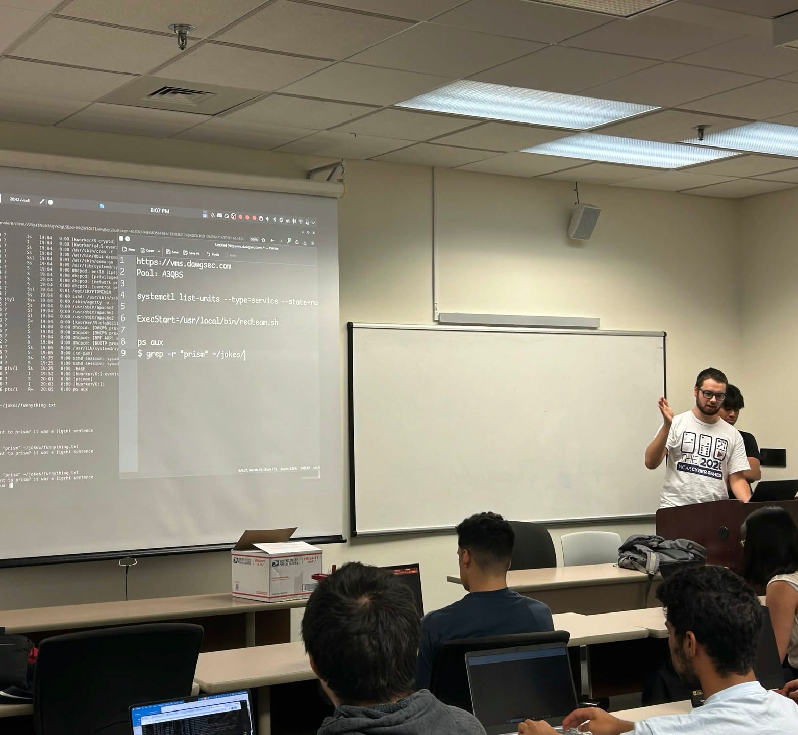

Interactive Resume
Hamza
Nasher-Alneam
Sophmore & Computer Science major at UMBC. I have a passion for software development, interface design, and competitive cybersecurity.

Leadership
At Centennial High School, I was a member of the Web Development Club board, where I helped create engaging presentations to teach web development concepts along with general management of the club.
I co-founded the Game Development Club at Broadneck High School to create a space for people interested in computers and software development. It is also an officially registered Hack Club, which gives the club support and opportunities. In the first year, we had 9 members who met weekly both inside and outside of school to showcase their work and give presentations about topics like creating engaging games and versioning code with Git. Even after changing schools, I've continued to keep in touch, providing ideas and feedback as well as mentoring and guiding new leaders.
While a member of the Broadneck Robotics Club, I was the technical lead, which meant that along with writing the code and collaborating on my team's robot design, I was responsible for helping all others teams with their code, ensuring it was functional for each competition.
Skills and Tools
I have worked primarily with JavaScript and Node.js to create full-stack web apps, but I am also comfortable in several other languages, including Python and Java. With regards to software tools, I have experience in Git, GitHub, Visual Studio Code, and GitHub Copilot, among other commonly used industry software.
With regards to Linux and management of systems, competing in Cyberpatriots and CCDC cyber competitions has given me knowledge on securing Linux-based operating systems, while using Linux on my personal device as well as different distros on my servers (Ubuntu, Fedora, Proxmox) has taught me the fundamentals of the operating system and tasks commonly associated with it, like web hosting.

Extracurriculars
As Technical Director and previously Secretary of the UMBC CyberDawgs, I lead Technical Workshops and run practice competitions, with the goal of creating an environment where students can learn about offensive and defensive cybersecurity. As part of the club, I've competed in intra-club competitions like CDE and more widely recognized external competitions like WRCCDC and MACCDC. I've also captained teams for NCAE, WRCCDC Invitationals, and MW Invitationals.
At Centennial High School, I was a member of the foremost team in the Cyberpatriots club, which competed up to the State Round, and missed reaching the Semifinals by only 6 points. After the Cyberpatriots season, I lead a team of our best members for eCitadel, a similar cybersecurity competition open to high school and college students. Despite having one teammate drop out at the last second, we tied for 61st place.
While I was in the Broadneck Robotics Club, we participated in multiple local competitions throughout the 2023-2024 season, learning from our losses to improve our robot. Our efforts paid off near the end of the season, when we made it into the VEX Robotics state competition.
Achievements
-
Mar 27–28, 2026
MACCDCMid-Atlantic Collegiate CDC
Competed at the MACCDC with the CyberDawgs team.
-
Oct 11, 2025
1stUMBC Cyber Defense Exercise
Won the red/blue team competition against 16+ teams. I ran the network box and one of the Linux boxes.
-
Dec 14, 2024
1stQuHacks 2025 · beginner track
With grekand46, built the game Medium Rare.
-
Feb 24, 2024
1stMAGIC STEP Challenge
First place ($500) and the technical award with Ave Wiernicki, building the developer-profile platform FetchCV.
-
Feb 11, 2024
StateMaryland State Championship
VEX Over Under, with the Broadneck Robotics Club.
-
Apr 20, 2023
3rdMAGIC cybersecurity CTF
With tildejustin.
Work Experience
-
Summer 2026
InternRealmOne Foundry
Interned on fine-tuning local models and developing an offline pentesting harness.
-
Present
OngoingUMBC CyberDawgs
Technical Director, I run technical workshops and build the tools we use for learning and practice competitions.
Projects
A collection of ongoing and past projects that showcase my range and expertise.
A tool to deploy practice competitions that simulate the real environments used in CCDC competitions.
In developmentMore and newer projects are available on my GitHub.
Giving it back
In September 2026 I represented the CyberDawgs team to co-host and judge the cyber track at hackUMBC 2026. The next week, I volunteered as a white teamer, guiding a team of newcomers, at the CyberDawgs Cyber Defense Exercise, in addition to developing the Linux boxes for the competition.
While a member of the Pyoneers Club at Centennial High School, I taught two courses on Python to the middle school nearby and another one in the county online, as well as assorted lessons to other members of the Pyoneers Club.
Throughout my 9th grade summer, I volunteered at ECO City Farms, a nonprofit farm in Prince George's County that sells affordable fresh vegetables in food deserts.